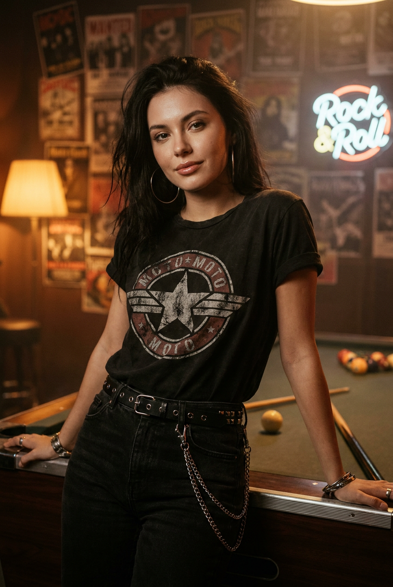
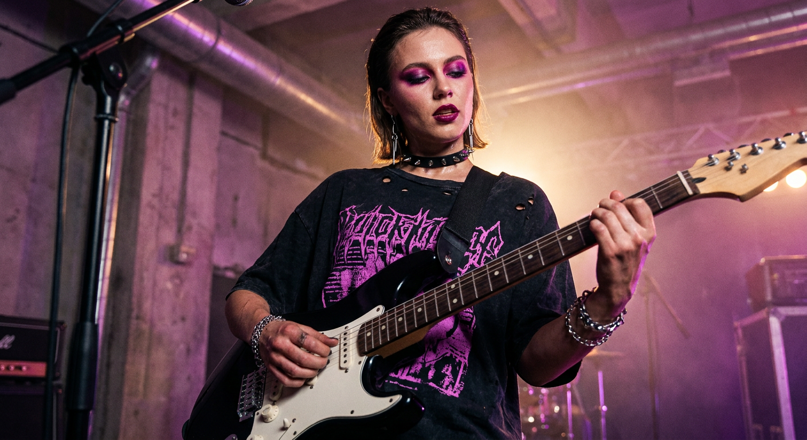
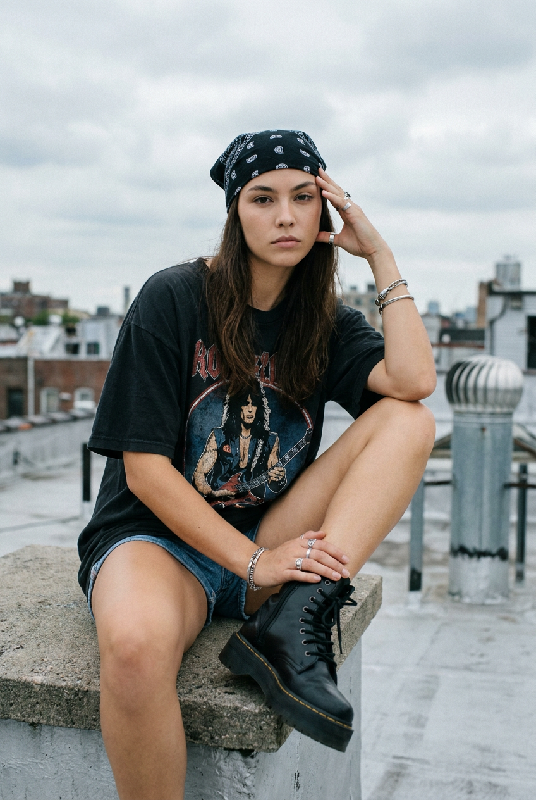
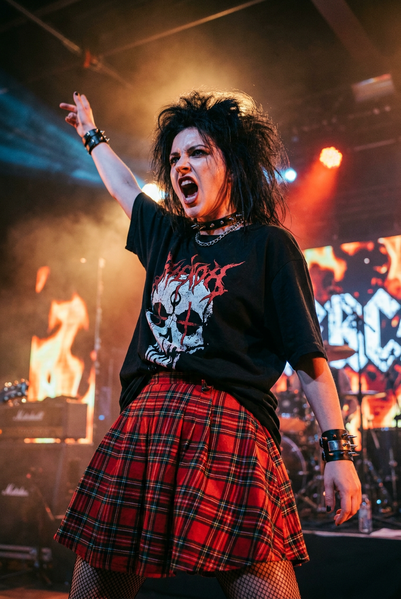
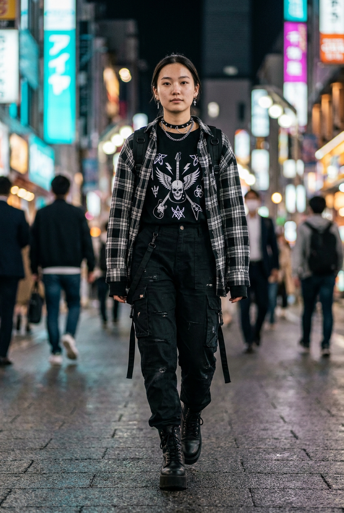
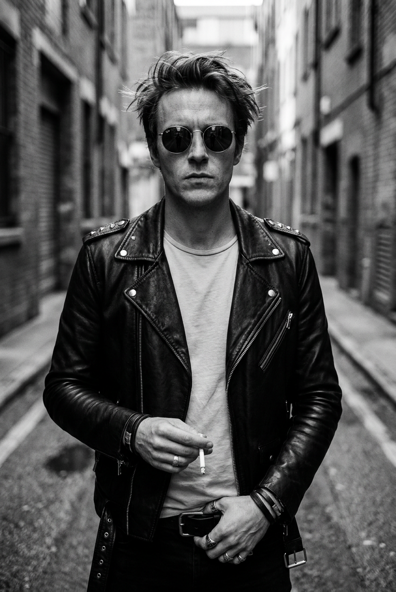
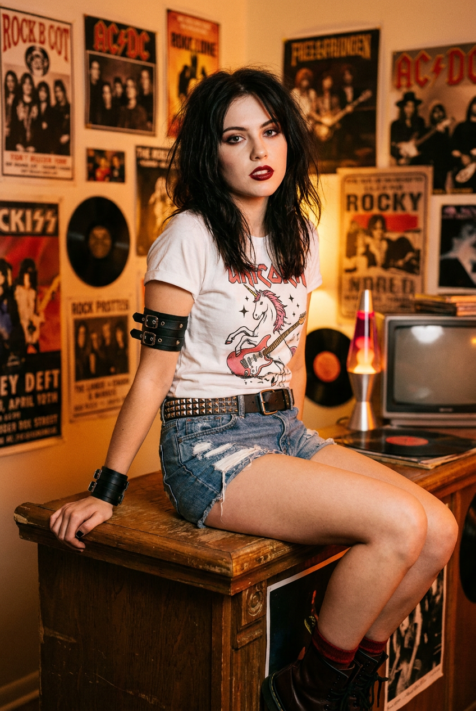
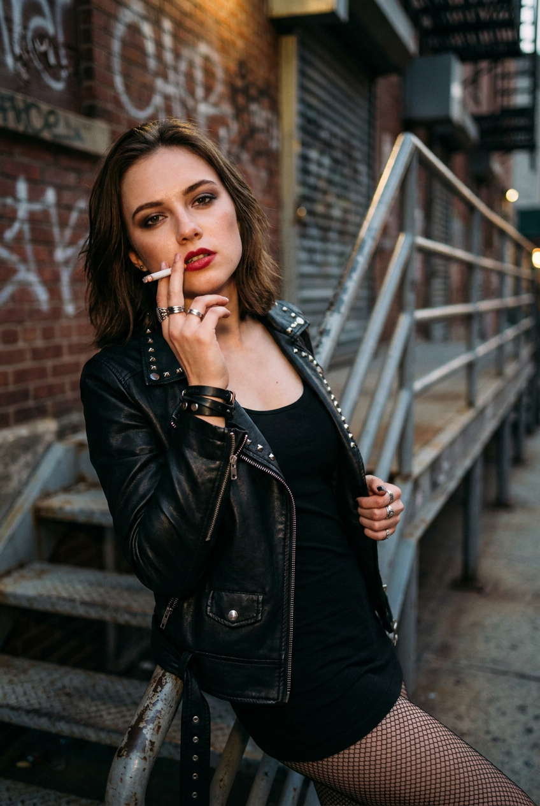
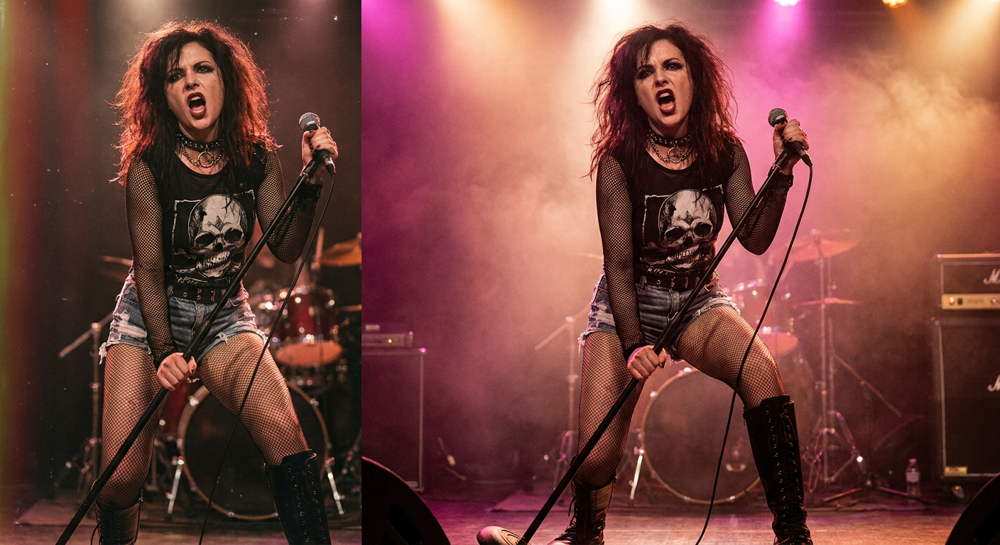
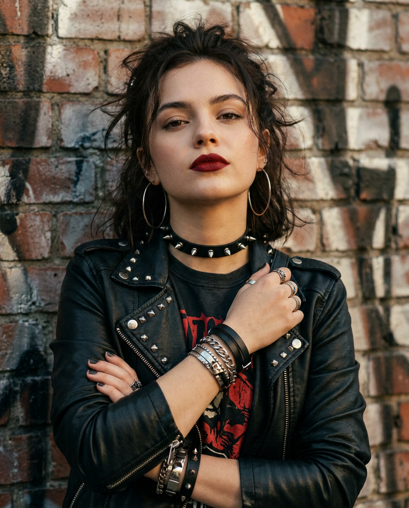

10 промптов для рокерских фото: нейросеть создаёт образ

Рокерский образ легко испортить случайными деталями: нейросеть меняет черты лица, теряет фактуру кожи или превращает кожаную куртку в бесформенное пятно. Хороший промпт задаёт не только одежду, но и позу, оптику, свет, выражение лица и окружение.
В подборке — десять сценариев для ИИ-фото: от портрета у бильярдного стола и кадра с электрогитарой до неоновой улицы, концертной сцены, крыши и чёрно-белого переулка. Все заготовки рассчитаны на работу с загруженным референсом лица.
Как сгенерировать такое фото: пошагово
Нужен снимок анфас при ровном свете, лицо в кадре целиком, без тёмных очков и головных уборов. Разрешение от 1000 пикселей по короткой стороне. Чем чётче исходник, тем точнее модель повторит черты.
Выберите сценарий ниже и нажмите «Копировать» — текст уйдёт в буфер целиком, вместе с командой сохранения внешности. Эта команда стоит первой строкой и отвечает за то, чтобы на выходе было ваше лицо, а не случайное.
Кнопка «Сгенерировать» рядом с каждым промптом открывает модель в новой вкладке. Nano Banana Pro работает с референсом лица — в отличие от моделей, которые генерируют портрет с нуля и узнаваемость теряют.
Промпт — в поле ввода, портрет — через загрузку референса. Порядок значения не имеет, но без референса команда сохранения внешности работать не будет: модели нечего сохранять.
Для сторис и ленты берите 9:16, для превью и обложек — 4:3. Первый результат редко идеален: если поза или свет ушли не туда, поправьте соответствующую часть промпта и запустите заново. Обычно хватает двух-трёх итераций.
10 промптов для генерации
1. Рокерша у бильярдного стола
Строго сохранить внешность по загруженному референсу: черты лица, пропорции, мимику и текстуру кожи без изменений. Фотореалистичный кинематографичный портрет девушки с лицом по загруженному референсу: точно передай форму глаз, бровей, носа, губ, овал, пропорции и естественную мимику, не меняй внешность. Небольшой рок-бар, рядом бильярдный стол. Камера на уровне груди, вертикальный кадр по пояс. Девушка слегка наклонена в сторону и естественно опирается предплечьями о край стола. Она смотрит прямо в объектив, выражение спокойное, уверенное, с едва заметной полуулыбкой. Волосы немного растрёпаны, на ушах крупные металлические серьги-кольца. Макияж выразительный, губы аккуратно глянцевые, кожа с живой реалистичной текстурой. На ней чёрная футболка с винтажным принтом в духе band shirt: круглая эмблема, звёзды и мото-рокерская графика. Мягкий барный свет, натуральные тени, резкий фокус на лице, фон слегка размыт, без пластиковой кожи и лишних пальцев.
2. Гитаристка на сцене

Строго сохранить внешность по загруженному референсу: черты лица, пропорции, мимику и текстуру кожи без изменений. Создай фотореалистичную концертно-студийную сцену в эстетике punk rock и alt rock. Девушка с лицом по загруженному референсу, с точным совпадением индивидуальных черт, формы глаз, носа, губ, бровей и овала лица. Она играет на электрогитаре старой рок-модели с чёрно-белым корпусом. Средний план с акцентом на торс, лицо и кисти: одна рука уверенно лежит на грифе, вторая находится у корпуса и струн. Корпус немного развёрнут, голова повернута к камере, взгляд спокойный и уверенный, поза расслабленная, но сценическая. Макияж rock glam punk: розово-фиолетовые тени, smoky eyes, чёткая подводка, яркая бордовая или вишнёвая помада. На шее чёрный кожаный чокер с ремешками, металлическими заклёпками и шипами. Реалистичная кожа без эффекта воска, видимая фактура материалов, направленный концертный свет, мягкий контрастный фон.
3. Гранж на крыше

Строго сохранить внешность по загруженному референсу: черты лица, пропорции, мимику и текстуру кожи без изменений. Фотореалистичная кинематографичная street-fashion фотография в духе rock, alt и grunge. Девушка с лицом по загруженному референсу, сохрани индивидуальные черты, пропорции, естественную мимику, форму глаз, носа, губ и овал лица. Она сидит на бетонном или металлическом выступе на крыше, ноги согнуты, одна нога выдвинута вперёд. Локоть согнут, ладонь легко поддерживает голову у виска или затылка, вторая рука покоится на колене или бедре. Взгляд прямо в объектив, выражение спокойное и слегка серьёзное. Вертикальная композиция: полупортрет с ногами в кадре. На голове чёрная бандана-косынка с декоративным орнаментом, концы спрятаны или немного видны. Естественный макияж с акцентом на глаза, матовые или сатиновые губы. Чёрная рокерская одежда: кожаная куртка, тёмный топ и джинсы с потёртостями. Городской ветер, натуральный дневной свет, фактура бетона и металла, реалистичные тени.
4. Крик со сцены

Строго сохранить внешность по загруженному референсу: черты лица, пропорции, мимику и текстуру кожи без изменений. Фотореалистичная концертная фотография в стилистике punk rock и rockabilly punk. Рок-певица или гитаристка с лицом по загруженному референсу выступает на сцене в резком движении: корпус развёрнут в сторону, одна рука поднята и вытянута, будто артистка обращается к залу. Рот открыт в момент крика или пения, выражение дерзкое, энергичное, взгляд направлен в зрительный зал или немного в объектив. Вертикальный кадр full body или mid-full, камера расположена низко, чтобы усилить ощущение сцены и масштаба. Объектив 35–50 мм, диафрагма f/1.8, небольшая глубина резкости. Героиня резкая, музыканты, инструменты и задник мягко размыты. На ней чёрный сценический рок-образ: кожаная куртка, облегающий топ, рваные детали, металлические украшения и ремни. Жёсткий контровой свет, цветные прожекторы, лёгкое зерно концертной съёмки, естественная текстура кожи.
5. Неон и городской шаг

Строго сохранить внешность по загруженному референсу: черты лица, пропорции, мимику и текстуру кожи без изменений. Сделай фотореалистичную street-fashion фотографию девушки с лицом по загруженному референсу. Точно сохрани её индивидуальные черты, форму глаз, бровей, носа, губ, овал лица, пропорции и естественное выражение. Она идёт навстречу камере по многолюдной улице большого азиатского города, похожего на центр Токио или Сеула. Шаг динамичный, руки свободно опущены, корпус выпрямлен, взгляд направлен прямо в объектив, лицо спокойное и уверенное. Вечерняя атмосфера: неоновые вывески, рекламные экраны, смешение холодного и тёплого света, огни боке, прохожие в мягком размытии. Светлая плитка или асфальт, городские ограждения и элементы инфраструктуры по краям кадра. Рокерский образ: чёрная кожаная куртка, футболка с графическим принтом, рваные тёмные джинсы, тяжёлые ботинки, металлические цепи и кольца. Камера на уровне глаз, лёгкий motion blur на фоне, лицо и передняя фигура в фокусе.
6. Чёрно-белый байкер

Строго сохранить внешность по загруженному референсу: черты лица, пропорции, мимику и текстуру кожи без изменений. Фотореалистичный кинематографичный street-portrait мужчины с лицом по загруженному референсу. Сохрани его реальные черты, форму глаз, бровей, носа, губ, овал лица и пропорции без изменения внешности. Он стоит в узком городском переулке, фотография выполнена в чёрно-белой гамме с чётким контрастом. Камера находится на уровне талии или груди, кадр полуростовой. Одна рука естественно держит сигарету или небольшой предмет, вторая остаётся у корпуса либо лежит на поясе. Выражение спокойное, немного суровое, взгляд направлен в камеру через тёмные круглые или овальные очки с металлической оправой; на линзах заметны естественные световые блики. Волосы растрёпаны ветром, отдельные пряди хорошо прорисованы. Одежда в духе biker rock: кожаная куртка, тёмная футболка, металлическая цепь и грубые детали. Реалистичная кожа, фактура кожи и кирпичных стен, жёсткий боковой свет, без сигаретного дыма, закрывающего лицо.
7. Ретро-поп-панк в комнате

Строго сохранить внешность по загруженному референсу: черты лица, пропорции, мимику и текстуру кожи без изменений. Фотореалистичная кинематографичная фотография в эстетике 90s retro alt rock и pop-punk. Девушка с лицом по загруженному референсу: точно передай черты, форму глаз, бровей, носа, губ, овал лица, пропорции и естественную мимику. Она сидит на краю деревянной стойки или столешницы в уютной рок-комнате. Камера на уровне глаз, кадр по пояс или полуростовой, главный акцент на лице и одежде. Девушка слегка наклонена вперёд, одна рука опирается на край поверхности, вторая свободно лежит рядом. Корпус немного повёрнут, диагонали создают живую композицию. Взгляд прямо в объектив, выражение спокойное, чуть дерзкое. Волосы слегка взъерошены, макияж рокерский: акцент на глаза, выразительные стрелки, тёмно-красные или бордовые губы, ровная кожа с натуральной текстурой. Небольшие серьги-кольца, чёрная футболка, клетчатая рубашка и детали поп-панк образа. Тёплый локальный свет, деревянные и музыкальные элементы на фоне, мягкое размытие.
8. Поручень и дерзкий взгляд

Строго сохранить внешность по загруженному референсу: черты лица, пропорции, мимику и текстуру кожи без изменений. Создай фотореалистичный кинематографичный портрет в стиле biker punk и grunge. Женщина с лицом по загруженному референсу, с точным совпадением индивидуальных черт, формы глаз, бровей, носа, губ, овала и пропорций лица. Она находится на улице у металлической лестницы или ограждения, прижимается к поручню и разворачивает корпус к камере. Композиция строится вокруг лица и рук: одна рука согнута и поднесена к губам, в пальцах сигарета, другая крепко удерживает металлический поручень. Поза слегка хищная, но естественная. Взгляд почти прямо в объектив, выражение расслабленное и дерзкое. На глазах чёткая подводка или smoky eyes, губы насыщенного вишнёвого либо красного оттенка. Кожа реалистичная, с естественными тенями и бликами вспышки или контрового света. На героине чёрная кожаная куртка, тёмный топ, металлические цепи и кольца. Резкий фокус на лице, холодный городской фон, видимая фактура металла, без лишних пальцев и деформации сигареты.
9. Панк-вокалистка у микрофона

Строго сохранить внешность по загруженному референсу: черты лица, пропорции, мимику и текстуру кожи без изменений. Фотореалистичная концертная фотография в жанре punk и goth rock. Девушка с лицом по загруженному референсу выступает на сцене в полный рост, сохраняя реальные черты, форму глаз, бровей, носа, губ, овал лица и естественную мимику. Она стоит в центре кадра у микрофонной стойки: одна рука поднята к микрофону или сжимает стойку, корпус слегка развёрнут к ней. Рот открыт в момент вокала, лицо энергичное и дерзкое. Камера снимает с немного нижнего или среднего ракурса, чтобы фигура выглядела доминирующей. Волосы растрёпаны движением и сценическим ветром. Макияж выразительный: подчёркнутые брови, стрелки или тёмный контур глаз, матовая тёмно-красная либо бордовая помада. На ней чёрный топ с сетчатыми или прозрачными вставками на плечах, кожаные брюки или юбка, ремни, металлические украшения и тяжёлые ботинки. Цветные прожекторы, дымка, размытые детали сцены, резкий свет на героине.
10. Портрет у кирпичной стены

Строго сохранить внешность по загруженному референсу: черты лица, пропорции, мимику и текстуру кожи без изменений. Фотореалистичный кинематографичный портрет по грудь в стиле biker glam и rocker punk. Девушка с лицом по загруженному референсу: сохрани форму глаз, бровей, носа, губ, овал, пропорции и естественную мимику без изменения внешности. Она стоит вплотную к кирпичной стене и опирается на неё плечом. Руки скрещены на груди: одна ладонь поддерживает или обхватывает ремень куртки на другом плече, пальцы отчётливо видны и анатомически корректны. Подбородок слегка поднят, взгляд прямой, выражение спокойное, уверенное и немного дерзкое. Волосы собраны небрежно, отдельные пряди выбились и заметно разлетаются, текстура волос натуральная. Макияж с выразительными smoky eyes или чёткой подводкой, губы покрыты яркой матовой тёмно-красной помадой. На ней чёрная кожаная куртка, крупные металлические кольца, серьги и цепочка. Мягкий боковой свет подчёркивает кирпич, кожу и складки ткани, фон не отвлекает, лицо и пальцы в резком фокусе.
Что важно учесть в этом стиле
Рокерская эстетика держится на контрасте: грубая кожа, металл и кирпич хорошо работают рядом с живой кожей, мягким боке и аккуратным макияжем. Если описать только одежду, нейросеть часто выдаёт каталоговый снимок без характера. Поэтому в промпте нужны положение рук, направление взгляда, наклон корпуса и источник света.
Для портрета задавайте конкретный план и объектив: 35 мм даст больше пространства и динамики, 50 мм соберёт выразительный средний кадр, а f/1.8 размоет фон. Для концертных сцен добавляйте низкий ракурс, дымку и цветные прожекторы, но отдельно указывайте, что лицо, руки и главный предмет должны оставаться резкими.
Идеи для вариаций
- Замените бильярдный стол на барную стойку с усилителем и виниловыми пластинками.
- Перенесите сцену на заброшенную парковку, в гараж или подземный переход.
- Попросите чёрно-белую плёнку с зерном ISO 800 вместо цветного неона.
- Добавьте красный контровой свет, дым от сценической машины и отражения на металлических деталях.
- Поменяйте электрогитару на бас, микрофон на винтажный хромированный или добавьте барабанную установку на фоне.
- Для мягкого образа уберите шипы и замените их клетчатой рубашкой, нашивками и тонкими цепочками.
Как собрать свой промпт
Начните с формата: портрет по грудь, средний план, full body или вертикальный street-fashion кадр. Затем опишите действие и позу, а после — одежду, макияж, аксессуары и локацию. Такой порядок помогает модели не потерять главный объект.
В конце добавьте параметры съёмки: фокусное расстояние, диафрагму, направление света, глубину резкости и нужную фактуру. Для референса лица отдельно укажите, что должны сохраниться индивидуальные черты и пропорции. Если первый результат неудачный, меняйте по одному параметру и делайте 4–8 попыток, а не переписывайте весь текст сразу.
Ошибки, из-за которых кадр не получается
- Слишком общий образ. Фраза «сделай рокершу» не задаёт ни силуэт, ни эпоху, ни материалы. Назовите куртку, топ, обувь и украшения.
- Перегруженная сцена. Когда в кадре одновременно много вывесок, музыкантов, дыма и предметов, лицо теряет фокус. Оставьте один главный фон.
- Неописанная поза. Без положения рук модель часто создаёт лишние пальцы или неестественные локти. Укажите, что держит каждая рука.
- Конфликт света. Сочетание ночи, полуденного солнца и студийной вспышки даёт грязные тени. Выберите один основной источник и один контровой.
- Слишком сильная стилизация лица. Слова «идеальная кожа» провоцируют пластиковую текстуру. Лучше просить натуральные поры, мягкий блеск и реалистичные тени.
Частые вопросы
Как сделать такое ИИ-фото бесплатно?
Попробуйте Kandinsky и Шедеврум: они подходят для генерации по текстовому описанию, но точность работы с загруженным лицом и сохранение позы может быть ограниченной. В Krea AI и Arena.ai удобнее тестировать разные варианты и референсы, однако доступные функции, лимиты и качество меняются. Для точного сходства подготовьте чёткий портрет без очков, сильных теней и перекрывающих лицо волос.
Как сохранить сходство с человеком на референсе?
Загрузите хорошо освещённый портрет анфас или в лёгком повороте и отдельно опишите сохранение формы глаз, носа, губ, бровей и овала лица. Не добавляйте рядом несколько лиц и не меняйте одновременно возраст, причёску и ракурс. Если сервис позволяет регулировать силу референса, начните со среднего значения, а затем сделайте 4–6 вариантов.
Почему нейросеть портит руки и гитару?
Сложные предметы и перекрывающиеся пальцы требуют точного описания. Укажите, где находится каждая рука, за какую часть инструмента она держится и что пальцы должны быть анатомически корректными. Помогает средний план, при котором кисти достаточно крупные, а также отдельная перегенерация проблемной области.
Как получить более реалистичный рокерский кадр?
Опишите не только стиль, но и условия съёмки: объектив 35 или 50 мм, диафрагму f/1.8–f/2.8, направление света, глубину резкости и материал одежды. Просите натуральную текстуру кожи, отдельные пряди волос, реальные складки кожи и металла. Слова «пластиковое лицо», «лишние пальцы» и другие нежелательные детали можно вынести в negative prompt, если выбранный инструмент его поддерживает.